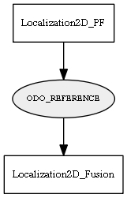

Global overview
All modules
All variables
All commands
Mission files
Pipelines
Variable: ODO_REFERENCE
Variable info:
Variable name
Short description
Who publishes it?
Who subscribes to it?
ODO_REFERENCE
The last odometry used to estimate the pose
Localization2D_PF
Localization2D_Fusion
Variable graph:

Detailed description:
The last odometry used to estimate the pose
Page generated by
Mooxygen 1.1.0
at Thu Jan 22 11:30:21 2015